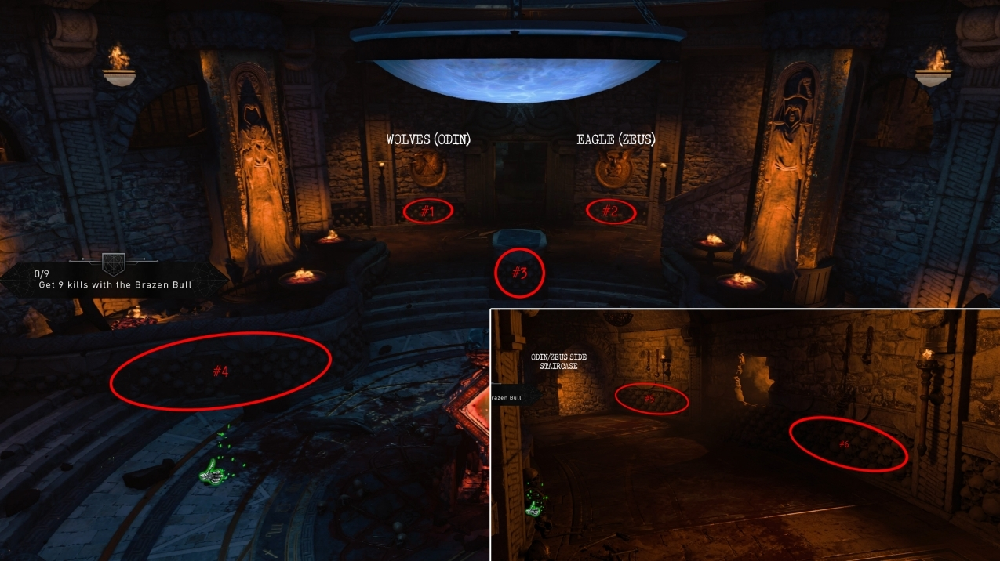
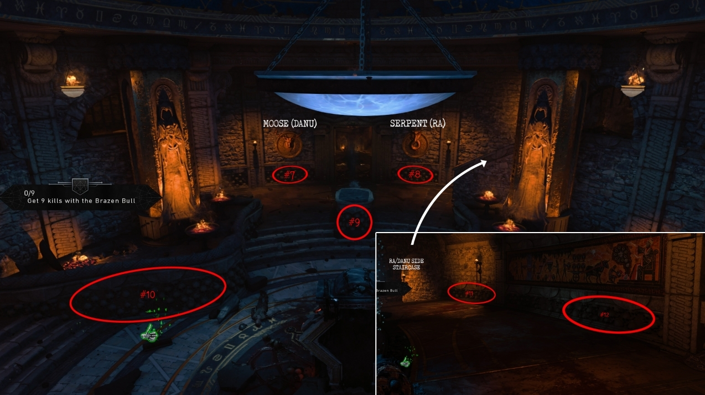
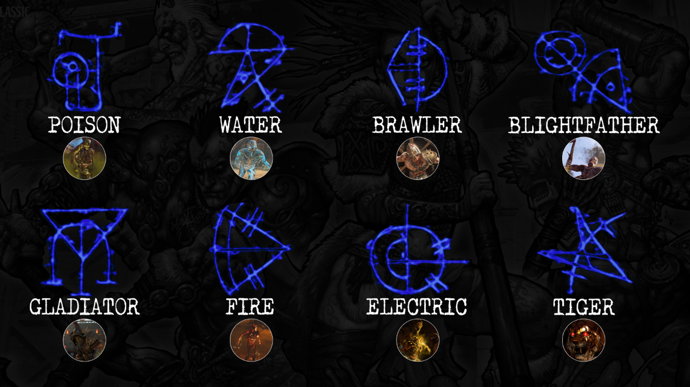
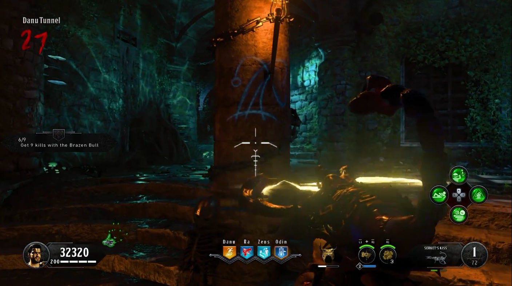
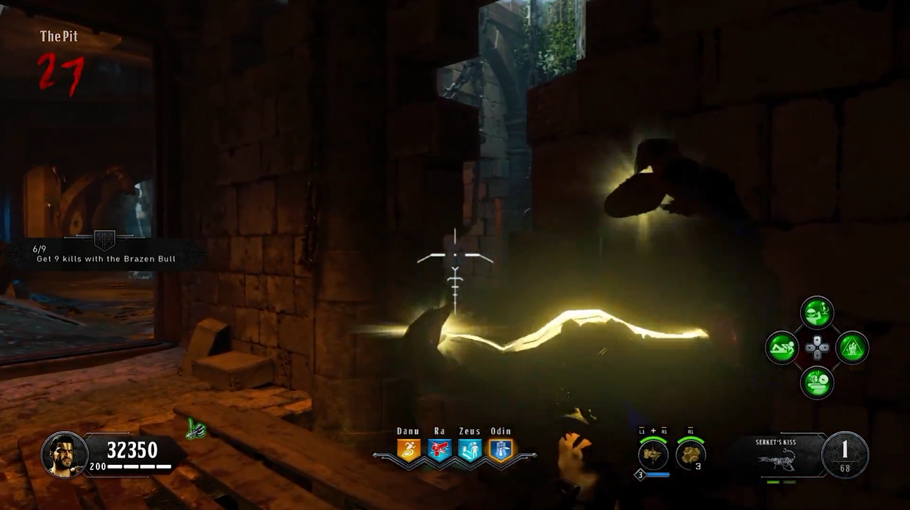
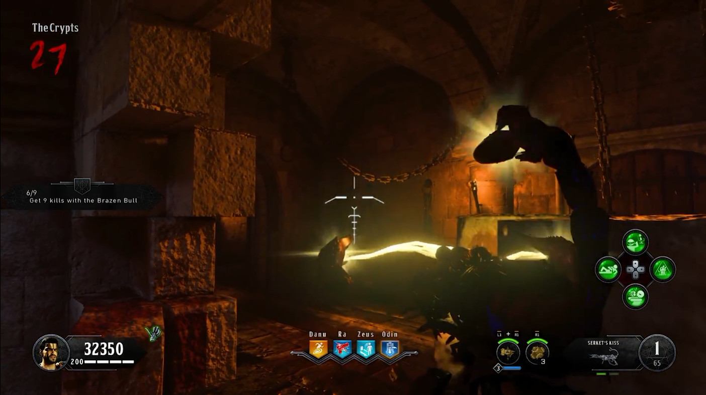

Prerequisites
- PaP Open (4 gongs)
- Death of Orion (for step 3)
- Fire Bomb PaP (for step 8)
- Shield (for step 11)
Recommended Setup
- Specialist - Viper and Dragon
- Equipment - Wraith Fire
- Start Weapon - Strife
- Perks
- Bandolier Bandit
- Victorious Turtle
- Dying Wish
- Modifier - Stamin-up OR Winters Wail
- Elixirs
- Anywhere But Here
- Stock Option
- Equip Mint
- Temporal Gift
- During the Game
- Humunulus
- Hellion Salvo PaP
- Spitfire PaP
Main EE
- In the PaP Room, find a skull with a symbol on its forehead (12 possible locations)
- Pull out your specialist to make the skull fall. Pick it up.
- Find the skull in the flooded crypt area by interacting with the grinder to place the skull and shooting it with 3 charged Death of Orion shots
- Pick up the bone mesh under the grinder
- Get the Poop and Chunk of Wood
- Chunk of Wood
- Get a gladiator (spawns around round 10, CANNOT be from special round) to throw his axe at one of the wood stacks in the arena. Pick up the wood chunk that flies off
- Place the chunk of wood onto the chain above the cauldron in the Odin Tower Wait a round or 2 (until wood looks charred)
- Pick it back up
- Poop - Get Negative Affinity (step into arena fire and throw grenades at the crowd, indicated by red thumbs down) and wait for the crowd to throw poop into the arena. pick it up.
- Head to the Zeus Tower Bath House and place all the ingredients into the Bowl on the right side Wait 2 Rounds (until the mixture is stinky)
- Place the poop again inbetween the trees at the bottom level of Danu Tower Wait 2-3 Rounds (Until poop becomes stinky again)
- Get a zombie ontop of the poop and kill it using the Fire Bomb PaP (screen flashes white when successful)
- Stand ontop of the glowing poop and interact with it until screen flashes white again and you get transported
- on each floor, find and shoot down the glowing red pockets off the walls. (Max ammos spawn after each is destroyed)
- Find and shoot 4 stone plates with the shield gun (9 locations) AFTER a symbol has been shot, a gladiator will spawn. Simply kill him and continue with the next symbol location.
- Arena - Located above the gate that closed when you first entered the arena
- Odin-Zeus Bridge - Located on the Zeus Tower, you will notice the symbol while standing on the bridge
- Odin-Zeus Temple Entrance - Located on the Zeus side, you will find the part near the cracked arch that is hanging in ivy
- Danu Altar Room - Hidden inside the zombie window, facing the crowd
- Flooded Crypt - Located past the barricade where zombies spawn, you will find the symbol through an open door
- Temple - Located through one of the zombie windows, that happens to be next to a burning torch
- The Pit - Located above eye level, you can just make out the symbol through a crack in the wall
- Danu Tunnel - Located next to a zombie window, with a torch nearby
- Ra Burial Chamber - Through hole in the wall sitting ontop of a pillar
- Go to the top of the Ra tower nad interact with the glowing blue symbol on the pillar in the center of the room. The pillar will then show you 4 symbols corresponding to 4 enemy types which you must memorize and kill in that order (bottom to top) Repeat once for a total of 8 symbols. You are allowed to kill normal zombies during this step, just not special ones. Symbols stay blue after completion WARNING: Fire and Poison zombies explode when you're near them and counts as them dying! Step cannot be completed on special rounds
- Interact with the podium in the center of the arena to be locked into the underground temple. Find and shoot 4 hanging metal rods behind barriers to move them all the way up. Fastest way is to use shield ammo and purchase new shield when you run out
- Odin Tunnel - near Maddox RFB wallbuy
- Danu Tunnel - near Mozu Wallbuy
- Collapsed Tunnel - near MX9 wallbuy
- The Cursed Room - near KN-57 Wallbuy
- Head back to the Arena and locate the 4 prongs on the outside walls Kill 15 zombies affected by Kill-O-Watt BEFORE Kill-O-Watt kills them within the circles around the prongs (shoot zombies once for Kill-O-Watt and again for the progress) Alternativey, you can get Gladiator kills to fill the prongs halfway instantly (2 kills = full) Circle Dissapears when the prong is full
- Have all players interact with the 4 podiums in the middle of the arena. You will be given an unlimited specialist weapon and must survive against gladiators, tigers and brawlers for 1-2 minutes. Screen goes white upon completion.
- go down to the temple are and trick-shot 9 symbols (in groups of 3) so that a single shot from the Death of Orion hits 3 symbols. symbols will remain glowing if hit properly
- Danu Tunnel - Located on one of the pillars, simply jump to shoot at it to achieve the correct angle
- The Pit - Located on a brick wall, you will want to aim between a broken wall and directly beneath the hanging chain to get the correct angle
- The Crypts - Located on the cracked wall that is equip with hanging chains. You should try aiming slightly towards the right corner of the broken wall, just beneath the chains to get the correct angle
- Head to the Pit area, stand on the podium near the grate to start a lockdown (screen glows white when activated) The Max ammos will not despawn during this step When the zombies stop spawning and the blightfather is dead, walk over to the grate and collect the sparing key TIP: Zombies will not continue spawning until the key has been picked up (break time)
- Head back to the arena and interact with the gate to enter the bossfight when ready






Boss Fight
Any max ammos the bossfight supplies will not despawn.
The boss constist of 3 phases:
- Waves of Gladiators, Tigers, and Brawlers
- First elephant
- Second elephant
To take down the elephant, shoot its side armor (red weak spots) until it falls off, then attack the weak spots on its stomach and forehead